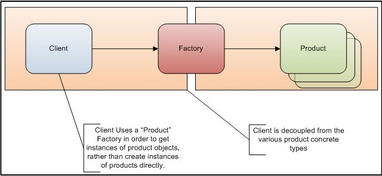

Why use a class factory?
There are many scenarios in software design where a factory comes in handy. Essentially, when you use a family of classes polymorphic-ally, you could benefit from using a Factory. Typically a factory provides the following benefits:- Decouples the client code (your code that uses these classes) from knowing how to create instances of concrete types
- Decouples the client code from knowledge of the concrete classes themselves. That is the client code knows only of the abstract base class or an interface but not the derived or concrete class
An important facet of system design is how objects are created. Most frameworks (including the .NET framework) make it extremely simple to create instances of classes and rightly so. However, what is not apparent is that you introduce coupling between the class that has been created and the class that uses the object. In small systems this coupling is not a problem but in large systems coupling between classes makes the system inflexible or rigid making changes over time more difficult to accommodate. The Factory design pattern helps alleviate this coupling.

There are many ways in which to implement a factory. Ranging from simple to exotic. But essentially their implementations differ in the following area:
- How the decision is made as to which class to instantiate
- How an instance of a class is actually created
Understanding the use of a Factory
By way of an example, lets say we have a bunch of employees and eachEmployee has a property called EmployeeType that specifies how the employee is paid. As you can see in the code listing below the EmployeeType enum has 3 possible values. The system uses this information to process the payment for each employee. Employee Class
enum EmployeeType { Salaried, Commission, Hourly } class Employee { public int Id { get; private set; } public string Name { get; private set; } public EmployeeType EmployeeType { get; private set; } public Employee(int id, string name, EmployeeType employeeType) { Id = id; Name = name; EmployeeType = employeeType; } }
Sample Code
var employees = new List<Employee> { new Employee(1, "Employee One", EmployeeType.Commission), new Employee(2, "Employee Two", EmployeeType.Hourly), new Employee(3, "Employee Three", EmployeeType.Salaried), new Employee(4, "Employee Four", EmployeeType.Salaried) }; foreach (var employee in employees) { switch (employee.EmployeeType) { case EmployeeType.Salaried: //Process payment for salaried employee break; case EmployeeType.Commission: //Process payment for commision employee break; case EmployeeType.Hourly: //Process payment for hourly employee break; } }
EmployeeType that all descend from an abstract base class, like that shown below:
Payment Processor classes
abstract class PaymentProcessorBase { public abstract void ProcessPayment(Employee employee); } class SalariedPaymentProcessor : PaymentProcessorBase { public override void ProcessPayment(Employee employee) { Console.WriteLine(employee.Name + "'s Payment was processed using Salaried Payment Processor"); } } class CommissionPaymentProcessor : PaymentProcessorBase { public override void ProcessPayment(Employee employee) { Console.WriteLine(employee.Name + "'s Payment was processed using Commission Payment Processor"); } } class HourlyPaymentProcessor : PaymentProcessorBase { public override void ProcessPayment(Employee employee) { Console.WriteLine(employee.Name + "'s Payment was processed using Hourly Payment Processor"); } }
Sample Code
PaymentProcessorBase processor = null; foreach (var employee in employees) { switch (employee.EmployeeType) { case EmployeeType.Salaried: processor = new SalariedPaymentProcessor(); break; case EmployeeType.Commission: processor = new CommissionPaymentProcessor(); break; case EmployeeType.Hourly: processor = new HourlyPaymentProcessor(); break; } processor.ProcessPayment(employee); }
- The client code is tightly coupled to the various concrete classes and has intimate knowledge of how to create them
- If you add a new EmployeeType you would have to alter this code to account for the new EmployeeType.
Factory - Simple implementation
The simplest implementation of a factory might look something like that shown belowSimple Factory
class SimplePaymentProcessorFactory { public PaymentProcessorBase CreateFactory(string identifier) { if (identifier == "SalariedPaymentProcessor") return new SalariedPaymentProcessor(); else if (identifier == "CommissionPaymentProcessor") return new CommissionPaymentProcessor(); else if (identifier == "HourlyPaymentProcessor") return new HourlyPaymentProcessor(); throw new ArgumentException("The identifier: " + identifier + ", is not a valid identifier", identifier); } }
- Adding new classes means the code in the factory now need to be modified. So you shifted "the problem" from the client code to the factory.
- If you're dealing with a lot of classes then this code could get pretty unwieldy
- This design won't work in situations where you don't know the classes up front. Say in a plug-in scenario or similar, where all descendants current and future won't be known at the time of compiling this code.
Activator.CreateInstance()
and one of it's many overloads. This solution works really well but it can end up being slow if you're creating hundreds or thousands of classes in rapid succession (for example, in an ASP.NET application, your pages and handlers and controllers are created in Rapid succession). If you've got business rules that need to process thousands or millions of products items that the factory could end up being a bottle neck.
High Performance Factory
The key difference in the Factory presented in this article is that the creation of an instance of a class uses a delegate. Which means the performance is as good as calling a delegate which is as fast as calling a virtual method (in .NET). Considering the circumstances (that you don't know of the class you're going to be creating an instance of at the time of compiling your code) that is as good as it can get. Further, the factory automatically registers classes for you, so you don't have to register the classes you want the factory to create. You could easily modify the implementation such that classes need to register themselves with the factory. The implementation uses DynamicMethod and ILGenerator and then use the CreateDelegate method ofDynamicMethod to create and instance of a delegate that really references the constructor of the class you intend to create. Onces it creates a delegate instance it caches it so, so the next time it simply calls the delegate. The entire class is listed in the code listing below
Factory class - Using the default constructor of your classes
Factory Class - Default Constructor
using System; using System.Collections.Concurrent; using System.Linq; using System.Reflection; using System.Reflection.Emit; namespace Factory { static class PaymentProcessorFactory { private static Type classType = typeof(PaymentProcessorBase); private static Type[] constructorArgs = new Type[] { }; private static readonly ConcurrentDictionary<string, Type> classRegistry = new ConcurrentDictionary<string, Type>(); private static readonly ConcurrentDictionary<string, ConstructorDelegate> classConstructors = new ConcurrentDictionary<string, ConstructorDelegate>(); delegate PaymentProcessorBase ConstructorDelegate(); static PaymentProcessorFactory() { var sw = System.Diagnostics.Stopwatch.StartNew(); var paymentProcessors = from b in Assembly.GetEntryAssembly().GetTypes() where b.IsSubclassOf(classType) select b; foreach (var type in paymentProcessors) classRegistry.TryAdd(type.Name, type); } public static PaymentProcessorBase Create(string identifier) { if (String.IsNullOrEmpty(identifier)) throw new ArgumentException("identifier can not be null or empty", identifier); if (!classRegistry.ContainsKey(identifier)) throw new ArgumentException("No PaymentProcessor has been registered with the identifier: " + identifier); return Create(classRegistry[identifier]); } private static PaymentProcessorBase Create(Type type) { ConstructorDelegate del; if (classConstructors.TryGetValue(type.Name, out del)) return del(); DynamicMethod dynamicMethod = new DynamicMethod("CreateInstance", type, constructorArgs, classType); ILGenerator ilGenerator = dynamicMethod.GetILGenerator(); ilGenerator.Emit(OpCodes.Newobj, type.GetConstructor(constructorArgs)); ilGenerator.Emit(OpCodes.Ret); del = (ConstructorDelegate)dynamicMethod.CreateDelegate(typeof(ConstructorDelegate)); classConstructors.TryAdd(type.Name, del); return del(); } } }
Now with our factory in place, then code that does the payment processing would become as simple as:
Code using the Factory
foreach (var employee in employees) { var paymentProcessor = PaymentProcessorFactory.Create(employee.EmployeeType.ToString() + "PaymentProcessor"); paymentProcessor.ProcessPayment(employee); }
Notice that the "client code" (the code that uses the
PaymentProcessor classes and the Factory is completely decoupled from any knowledge of the actual classes that help with the payment processing of the different types. Thus when you need to add new payment processor types, it's a matter of defining a class the descends from the base class and implementing it. The Factory will automatically find the new class and register it and your client code will not have to change one bit. Now if your classes require say two parameters in their constructor then there are a few modifications you'll need to do. Let's say your class requires an Employee and an int parameter in it's constructor. I've provided a complete listing on the Factory class that includes the changes you'll need to make.
Factory class - Handling two parameters in the constructor of your classes
Factory Class - 2 constructor parameters
using System; using System.Collections.Concurrent; using System.Linq; using System.Reflection; using System.Reflection.Emit; namespace Factory { static class PaymentProcessorFactory { private static Type classType = typeof(PaymentProcessorBase); private static Type[] constructorArgs = new Type[] { typeof(Employee), typeof(int) }; private static readonly ConcurrentDictionary<string, Type> classRegistry = new ConcurrentDictionary<string, Type>(); private static readonly ConcurrentDictionary<string, ConstructorDelegate> classConstructors = new ConcurrentDictionary<string, ConstructorDelegate>(); delegate PaymentProcessorBase ConstructorDelegate(Employee employee, int intParam); static PaymentProcessorFactory() { var sw = System.Diagnostics.Stopwatch.StartNew(); var paymentProcessors = from b in Assembly.GetEntryAssembly().GetTypes() where b.IsSubclassOf(classType) select b; foreach (var type in paymentProcessors) classRegistry.TryAdd(type.Name, type); } public static PaymentProcessorBase Create(string identifier, Employee employee, int intParam) { if (String.IsNullOrEmpty(identifier)) throw new ArgumentException("identifier can not be null or empty", identifier); if (!classRegistry.ContainsKey(identifier)) throw new ArgumentException("No PaymentProcessor has been registered with the identifier: " + identifier); return Create(classRegistry[identifier], employee, intParam); } private static PaymentProcessorBase Create(Type type, Employee employee, int intParam) { ConstructorDelegate del; if (classConstructors.TryGetValue(type.Name, out del)) return del(employee, intParam); DynamicMethod dynamicMethod = new DynamicMethod("CreateInstance", type, constructorArgs, classType); ILGenerator ilGenerator = dynamicMethod.GetILGenerator(); ilGenerator.Emit(OpCodes.Ldarg_0); ilGenerator.Emit(OpCodes.Ldarg_1); ilGenerator.Emit(OpCodes.Newobj, type.GetConstructor(constructorArgs)); ilGenerator.Emit(OpCodes.Ret); del = (ConstructorDelegate)dynamicMethod.CreateDelegate(typeof(ConstructorDelegate)); classConstructors.TryAdd(type.Name, del); return del(employee, intParam); } } }
ilGenerator.Emit(OpCodes.Ldarg_1);
That brings us to the end of this article. I hope you found it useful.